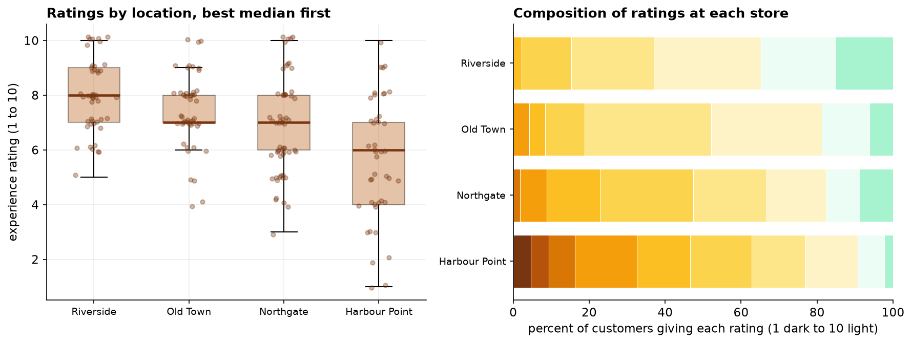
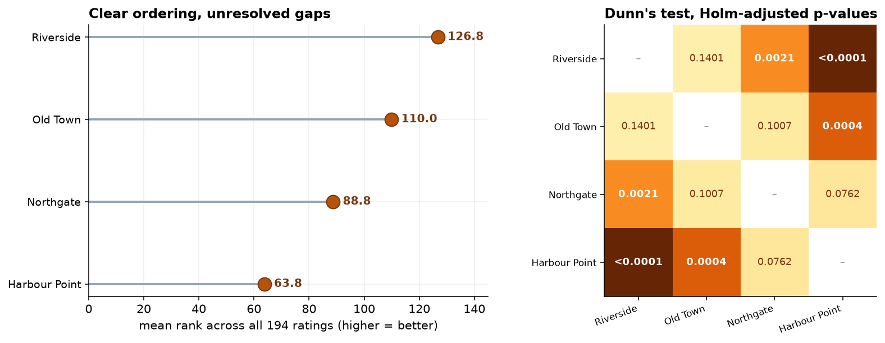

Capstone 5 ran a one-way ANOVA on exam scores where every assumption held. This is the same shape of question with none of them holding, and it closes the loop the last two chapters opened: Mann-Whitney for two groups, Wilcoxon for two paired measurements, and now the rank-based answer for three or more.
- Setting
- Four stores collected customer experience ratings on a 1-to-10 scale over one quarter, leaving 194 ratings in unequal groups after cleaning.
- The question
- Do the four locations differ in customer experience, and which ones?
- Why it matters
- The regional manager has to decide where to send support. Naming the wrong store spends the intervention and leaves the real problem untouched.
- What we do
- Run the Kruskal-Wallis omnibus test, follow it with Dunn's pairwise comparisons under Holm, report epsilon-squared for effect size, and separate the two very different reasons a pair of stores can look alike.
The four locations are not interchangeable (H = 32.75, p = 0.00000036, ε² = 0.157, N = 194). Harbour Point is the clear laggard. But only three of the six pairs can actually be separated, and Old Town sits between two stores that differ from each other while differing from neither.
The Question an Omnibus Test Can Answer
Four stores collected customer experience ratings on a 1-to-10 scale over one quarter. The regional manager wants to know which locations need attention. That is not one question but two, and they need separate machinery.
The null hypothesis is that all four locations' rating distributions are the same. The alternative is that at least one differs, which is the most an omnibus test can deliver. Identifying which is a second step, with six pairwise comparisons and its own error-rate problem, exactly as in Capstone 5.
Cleaning removed three duplicate records, three blanks, and one impossible rating of 11, and normalized the location labels, leaving 194 ratings. Group sizes range from 43 to 57, because each store collected what it could. That is untidy and perfectly acceptable for these methods.
Four Stores, Four Different Pictures

| Location | n | Median | IQR | Mean | SD |
|---|---|---|---|---|---|
| Riverside | 46 | 8 | 7 to 9 | 7.96 | 1.33 |
| Old Town | 48 | 7 | 7 to 8 | 7.42 | 1.37 |
| Northgate | 57 | 7 | 6 to 8 | 6.79 | 1.74 |
| Harbour Point | 43 | 6 | 4 to 7 | 5.63 | 2.24 |
Harbour Point's spread is a finding in its own right. A store whose ratings run from the bottom of the scale to the top is delivering an inconsistent experience rather than a uniformly poor one, and those two problems have different causes and different fixes.
Why Not ANOVA
| Location | Shapiro-Wilk W | p | Verdict |
|---|---|---|---|
| Riverside | 0.931 | 0.009 | normality rejected |
| Old Town | 0.932 | 0.008 | normality rejected |
| Northgate | 0.956 | 0.037 | normality rejected |
| Harbour Point | 0.971 | 0.330 | not rejected |
| Levene (equal spread) | p = 0.0012 | rejected, SD ratio 1.68× | |
Normality falls in three of the four stores. No single location looks wildly non-normal, but with ratings bunched in the upper half of a bounded scale the departures are systematic rather than accidental. Equal spread falls too, and decisively.
Even if both diagnostics had passed, the outcome is an ordinal rating. ANOVA compares means, and the mean of a 1-to-10 satisfaction score assumes the step from 5 to 6 is worth the same as the step from 9 to 10. The scale never established that, which is the argument from Capstone 12 and it does not go away when the sample gets larger.
The Omnibus Result
The four locations are not interchangeable. Epsilon-squared says location accounts for around 16 percent of the variation in ranks, which is a moderate effect for a factor as blunt as which building a customer walked into.
What the test does not say is which stores differ. It is tempting to look at the mean-rank ordering and read the gaps between adjacent stores as established. They are not, and the next section is where that becomes concrete.
Which Stores Actually Differ?
Four groups make six pairwise comparisons. Running six tests at 0.05 apiece would push the chance of at least one false alarm to roughly 26 percent, the same arithmetic that drove Capstone 4. Dunn's test is the standard follow-up to Kruskal-Wallis: it compares mean ranks pairwise using the ranking from the full sample, and the p-values are then adjusted, here by Holm's method.

| Comparison | Mean-rank gap | Holm-adjusted p | Verdict |
|---|---|---|---|
| Riverside vs Harbour Point | +63.0 | < 0.0001 | different |
| Old Town vs Harbour Point | +46.2 | 0.0004 | different |
| Riverside vs Northgate | +38.1 | 0.0021 | different |
| Northgate vs Harbour Point | +25.0 | 0.0762 | not distinguishable |
| Old Town vs Northgate | +21.2 | 0.1007 | not distinguishable |
| Riverside vs Old Town | +16.8 | 0.1401 | not distinguishable |
The ordering is real. The gaps between neighbors mostly are not resolvable at this sample size.
Two Things This Result Quietly Teaches
It is not a test of medians
Northgate and Old Town both have a median of 7. Dunn's test still puts 21 points of mean rank between them, because Old Town has far more customers up at 8 and above: 48 percent against Northgate's 33 percent. Kruskal-Wallis, like Mann-Whitney in Capstone 14, asks whether one group's values tend to be larger. It is not comparing any single summary statistic, and two groups can share a median while being clearly distinguishable.
Significance does not chain together
Riverside differs from Northgate (p = 0.002). Old Town sits between them and differs from neither (p = 0.14 and p = 0.10). Read as logic that looks like a contradiction. It is not.
The Verdict, and What Not to Do With It
Customer experience genuinely varies across the four locations, and about a sixth of the variation in ratings tracks with where the customer shopped. Harbour Point is the clear problem: lowest ratings, widest spread, and reliably below the two best stores. Riverside is the strongest. Old Town and Northgate sit in the middle and cannot be told apart from each other.
The operational reading is to put the attention on Harbour Point, keep an eye on Northgate, and build no league table out of the middle two. The wide spread at Harbour Point is its own signal, pointing at an inconsistent experience, which usually means staffing or scheduling rather than the site itself.
- Customers who leave feedback are not customers. Every rating here is volunteered, and people with strong feelings volunteer more readily. If Harbour Point's unhappy customers are also its most vocal, part of its gap is a response-rate artifact rather than a service difference.
- The stores are not otherwise identical. They serve different neighborhoods, sizes, and footfall patterns. This compares locations, not management. Attributing the gap to the staff at Harbour Point needs evidence this design does not contain.
- Ranking people on this would be a mistake. A result where the middle two stores are indistinguishable cannot support individual performance judgments. It supports a question worth asking at one location.
- Do not average the ratings for a dashboard. The composition chart in section 2 is the honest display for an ordinal scale.
- Group sizes reflect collection effort, not the customer base. Northgate contributed the most responses because it collected the most, which is fine for these tests but means the pooled figures are not a picture of the population.
Where This Test Sits in the Family
Kruskal-Wallis completes a set the last two chapters started, and the symmetry is worth committing to memory. Every parametric comparison has a rank-based counterpart that asks the same structural question with weaker assumptions.
| Design | Parametric | Rank-based | Where in this part |
|---|---|---|---|
| Two independent groups | Independent t-test | Mann-Whitney U | Capstone 2 and 14 |
| Two paired measurements | Paired t-test | Wilcoxon signed-rank | Capstone 3 and 15 |
| Three or more independent groups | One-way ANOVA | Kruskal-Wallis | Capstone 5 and this one |
| Three or more paired measurements | Repeated-measures ANOVA | Friedman | Capstone 6 took the parametric route |
Friedman is the one this part did not run. It is Kruskal-Wallis for repeated measures, and it would have been the fallback in Capstone 6 had the sphericity correction not been available.
Comparing several model variants, several prompt templates, or several vendors on a bounded quality score is the same design as four stores. The omnibus-then-post-hoc discipline matters more there than almost anywhere, because the natural move is to look at the ranking, pick the top variant, and ship it. With six or ten variants the ordering will always look decisive, and a correction for multiplicity will usually show that the top three cannot be separated. The right conclusion is often "any of these three", which is a more useful answer than a false winner.
Estimate: Two Reasons a Pair Can Look Alike
Three of the six comparisons came back "not distinguishable". That phrase does a lot of work and hides an important distinction, because a pair can be indistinguishable for two very different reasons: the stores really are alike, or the study was too small to tell them apart. Intervals separate those cases; p-values do not.
| Comparison | Shift (Hodges-Lehmann) | 95% CI | Dunn p |
|---|---|---|---|
| Riverside vs Harbour Point | +2.0 | +1.0 to +3.0 | < 0.0001 |
| Old Town vs Harbour Point | +2.0 | +1.0 to +3.0 | 0.0004 |
| Riverside vs Northgate | +1.0 | +1.0 to +2.0 | 0.0021 |
| Northgate vs Harbour Point | +1.0 | +0.0 to +2.0 | 0.0762 |
| Old Town vs Northgate | +1.0 | +0.0 to +1.0 | 0.1007 |
| Riverside vs Old Town | +1.0 | +0.0 to +1.0 | 0.1401 |
The shift estimates are coarse, and the reason is instructive. Every one comes out at a whole number of rating points, because the ratings themselves are whole numbers. On a 10-point scale a shift statistic cannot resolve anything finer, so it is a blunt instrument here. The interval widths still separate the unresolved pairs: Northgate against Harbour Point spans 0 to 2 points, so that pair is probably different and this quarter could not confirm it, while Riverside against Old Town spans 0 to 1, a genuinely narrow gap. Both were reported as "p above 0.05"; they are not the same situation.
| Location | Rating 8 or above | 95% CI (Wilson) |
|---|---|---|
| Riverside | 63% | 49% to 75% |
| Old Town | 48% | 34% to 62% |
| Northgate | 33% | 22% to 46% |
| Harbour Point | 23% | 13% to 38% |
| Epsilon-squared | 0.157 | 0.074 to 0.283 (bootstrap) |
The top-box shares are where the resolution actually is. 63 percent of Riverside's customers rate 8 or above against 23 percent of Harbour Point's. That is the comparison to put in front of an operations team, because it is expressed in customers rather than in ranks and it does not require averaging an ordinal scale. Epsilon-squared gets a range too, so "location explains about a sixth of the variation" is fair and anything more precise is not.
Each response records months_as_customer. For a variable to distort this
comparison it must do both things: differ across the stores and relate to the rating.
Tenure fails both (p = 0.55 and p = 0.85), so it is not quietly producing the ranking, and that is one alternative
explanation retired rather than assumed away.
The reasoning is the transferable part. Whenever a group comparison comes back significant, the question is not "could something else explain this?" in the abstract; it is which measured variable satisfies both conditions. Run that check on every covariate you have, then say plainly that the ones you did not measure, catchment, store size, footfall and staffing, are still open. This is an observational comparison and nothing in it was randomized, which is the difference between this chapter and Capstone 7.
The full project, step by step
The companion notebook cleans the feedback records with a printed audit trail, draws the distribution and composition pictures before any test, runs the ANOVA assumption checks and records what they said, computes the Kruskal-Wallis omnibus with its effect size, then runs Dunn's pairwise follow-up with Holm adjustment. It closes by demonstrating both quiet lessons directly: two stores with identical medians that the test separates, and three pairwise verdicts that refuse to chain.
The dataset
(capstone-store-ratings-across-locations.xlsx) holds the feedback records with duplicates, blanks, an
out-of-range rating, and inconsistent location labels left in so you can practice the cleaning. Two written reports
accompany it: a plain-language brief for a regional manager, and a technical
report covering the assumption failures, the effect size, and the multiplicity correction.
🎓 Key Takeaways
- ✓Kruskal-Wallis is one-way ANOVA on ranks: no distributional assumption, no adjustment needed for unequal group sizes, and appropriate for ordinal outcomes.
- ✓The omnibus test only says "at least one differs". Dunn's test with a Holm adjustment is what answers "which", and it separated only three of the six pairs here.
- ✓It does not compare medians. Northgate and Old Town share a median of 7 and sit 21 mean-rank points apart, because their upper tails differ.
- ✓Significance is not transitive. Riverside differs from Northgate, but Old Town, sitting between them, differs from neither. Failing to reject is not establishing equality.
- ✓Spread is a finding. Harbour Point's ratings are not just lower but far more scattered, which points at an inconsistent experience rather than a uniformly poor one.
Sixteen projects, one framework
Every capstone in this part ran the same twelve steps from The Analysis Framework: classify the data, describe it, picture it, clean it with an audit trail, name the design, check the assumptions and report what they said, choose a test and justify the choice, report an effect size next to the p-value, separate the statistical verdict from the practical one, and close on what the study cannot claim. The tests changed. The discipline did not.
Quiz: Test Yourself
Eight questions on this capstone, from the omnibus-then-post-hoc discipline to why significance refuses to chain. Answer them, hit Check Answers, and keep refining until you score 100%. Your progress is saved.